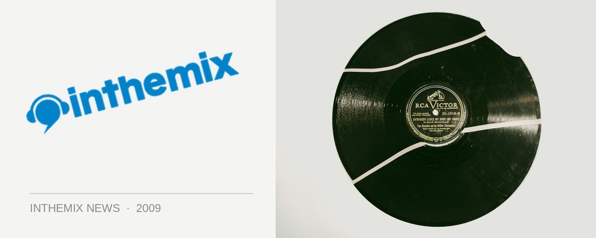

Sydney's FBi 94.5FM on its last legs
Do you love a little bit of community radio? It’d be a crying shame to see one of Sydney’s finest sources of alternative viewpoints and music disappear into the neither, but news just indicates that FBi 94.5 has officially been placed on the ‘endangered species list’. While there are currently an impressive 219,000 listeners tuning in every week, issues with funding are threatening the station’s existence and it’s now seeking $1million to stay on air. The FBi crew is currently reaching out to the music industry to assist with a series of fundraising events during May and June
FBi music director Dan Zilber says he’s hoping for a good response from the fundraising drive. “The station has always relied on our community for support and growth, so I hope we can count you and your artists in.”
Zilber says he’s currently working with major venues across the city for a series of ‘Save FBi’ gigs, and at the moment they’re seeking acts for a Hordern show in mid June, as well as shows in the last week of June at The Metro, Annandale Hotel, Oxford Art Factory, The Gaelic Theatre, Manning Bar, Hermanns, World Bar, Spectrum and more.
Think you can help FBi stay alive and thrive? Email Dan Zilber dan@fbiradio.com or Rob Giovannoni at rob@selectmusic.com.au.